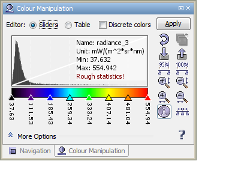
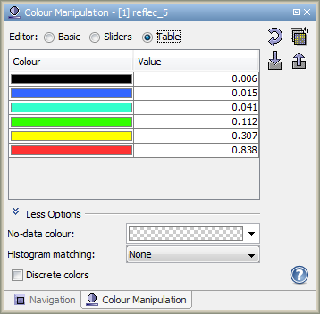
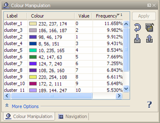
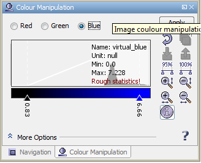
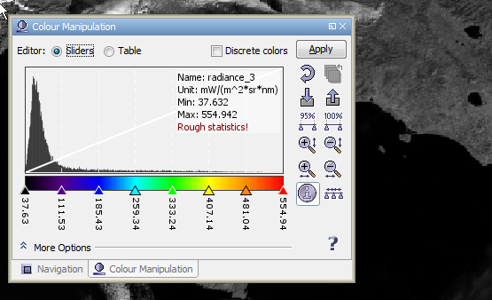
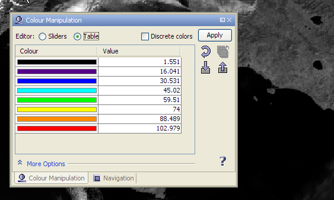
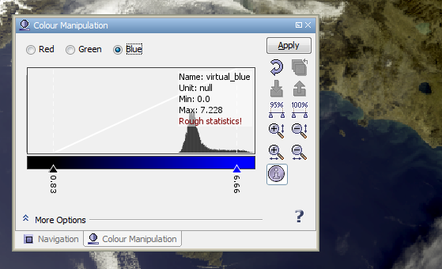
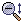

| Colour Manipulation | |
If you are opening an Image View of a data product's band or tie-point grid, VISAT either loads image settings from the product itself (BEAM-DIMAP format only) or uses default colour settings. The Colour Manipulation tool window is used to modify the colours used in the image. Depending on the type of the source data used for the images, the colour manipulation window offers for different editors:
|  |  |
| A.1: Editor for images of a single, spectral/geophysical band in Sliders mode | A.2: Editor for images of a single, spectral/geophysical band in Table mode |
|  |  |
| B.: Editor for images of a single, index-coded band | C. Editor for images using separate R,G,B channels |
To open the colour manipulation window, use the corresponding icon
 icon in the main toolbar or select View/Tool Windows/Colour Manipulation
from the main menu.
icon in the main toolbar or select View/Tool Windows/Colour Manipulation
from the main menu.
Changes in the colour manipulation window will be become effective only if the Apply button is pressed.
If the Rough statistics! is shown, the statistical information is computed on a sub-sampled level. You can click on it, in order to compute the accurate statistical data.
Images of a single, spectral/geophysical band use a colour palette to assign a colour to a sample value in the source band. By default, the editor is in a mode where sliders are used to modify the colour palette and herewith change the assignment of sample values to colours:

As the white diagonal line above the histogram indicates, the colour palette will be linearily applied to the samples of the source band of the current Image View. The label below the slider indicates the sample value assigned to the position of the slider in the histogram. By moving a slider with the mouse you can easily change it's sample value. You may also double-click the label, then a text field appears where you can enter a sample value. By moving a slider, the colours in the palette will change accordingly. You can also click between two sliders in order to move the nearest slider of both under the mouse cursor.
Slider colours are changed by clicking a slider. A popup window appears, where you can select the new colour. If you select None, a fully transparent slider results. In the More Options panels you can adjust the No-Data Colour and apply a Histogram Matching to enhance the contrast of the final image.
If you right-click on a slider, a context menu will pop up. The available actions are Add slider, Remove slider, Center slider sample and Center slider colour. Some actions may be disabled when the action cannot be performed.
By changing the Editor option from Sliders to Table the sample value to colour assignment can be done in a table:

Here you can enter the colour and sample values directly by clicking into a table cell.
Images of a single, index-coded band, e.g. the output of a cluster analysis, look-up discrete colours from a fixed-size table:

Labels and colours are simply changed by clicking into the corresponding table cell. In the More Options panels you can adjust the No-Data Colour.
Images using separate R,G,B channels use obtain their colours from the samples of three arbitrary bands. In the editor, users can switch between the channels in order to edit the contrast stretch range and gamma value of each channel separately.

In this mode the sliders are used for contrast stretching in each of the R,G,B channels.
In the More Options panels, you can adjust the No-Data Colour and
Histogram Matching for the final image. The Source Band and Gamma
options
apply to each channel. The gamma value is used to adapt the transfer function which quantises the band's
sample values to colour values. A gamma value of 0.7 for the blue channel enhances most
RGB images.
In the More Options panel of all editors you can adjust the No-Data Colour. This colour which will be used for no-data pixels in the source band(s). If you select None, no-data sample will be transparent in the image.
It is sometimes desirable to transform an image so that it's histogram matches that of a specified functional form. It is possible to apply an equalized or normalized histogram matching to images which can often improve image quality.
A click on the  icon opens a dialog where you can select
the bands to which you can assign the current colour palette. If the destination band has a similar
pixel value range, the slider positions are exacly preserved otherwise they are proportionally distributed
over the valid range of the destination band.
icon opens a dialog where you can select
the bands to which you can assign the current colour palette. If the destination band has a similar
pixel value range, the slider positions are exacly preserved otherwise they are proportionally distributed
over the valid range of the destination band.
Click the  icon to import colour palette definition files and the
icon to import colour palette definition files and the  icon to export the current colour manipulation settings.
icon to export the current colour manipulation settings.
The colour palette information used for the current image can also be exported into an image file. Click the context menu item Export Color Legend over an open image view in order export the colour legend.
The colour palette can be also exported as a Color Palette Table. Choose from the File menu Color Palette to export the table as a *.csv or *.txt file.
Note: VISAT has a couple of predefined colour palettes. They are stored
in user-home/.beam/beam-ui/auxdata/color-palettes. For convenience, the
import/export file choosers in the colour manipulation window dialog use this folder by default.
A click on the  icon adjusts the sliders to cover 95% of all pixels in the band.
icon adjusts the sliders to cover 95% of all pixels in the band.
A click on the  icon adjusts the sliders to cover 100% (the full range) of all pixels in the band.
icon adjusts the sliders to cover 100% (the full range) of all pixels in the band.
A click on the  icon distributes the inner sliders evenly between the first and the last slider.
icon distributes the inner sliders evenly between the first and the last slider.
Click on the  icon to zoom in vertically or on the
icon to zoom in vertically or on the
 icon to
zoom into the histogram horizontally.
icon to
zoom into the histogram horizontally.
Click on the 
icon to zoom out vertically or on the
 icon
to zoom out of the histogram horizontally.
icon
to zoom out of the histogram horizontally.
The reset icon  is used to revert the windo to contain default values.
is used to revert the windo to contain default values.
The information icon  is used to toggle the visibility of the extra
information area.
is used to toggle the visibility of the extra
information area.
The help icon  opens the BEAM Help for the current context.
opens the BEAM Help for the current context.